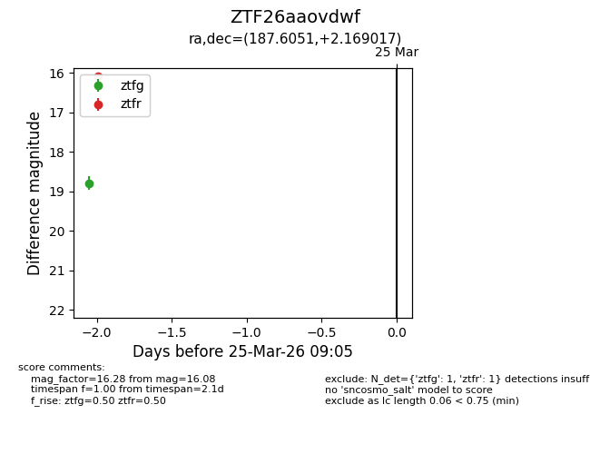
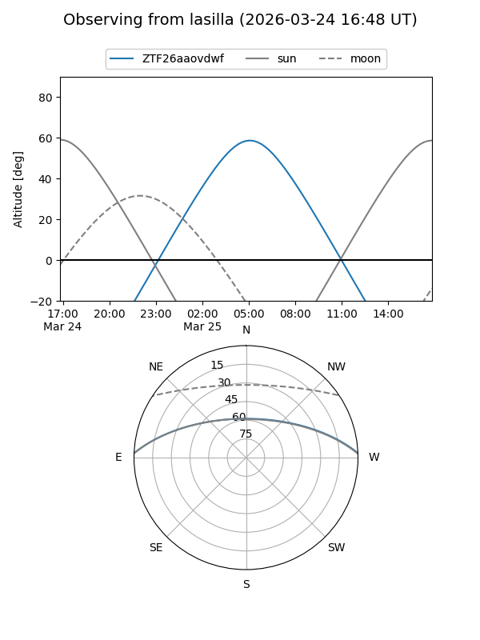
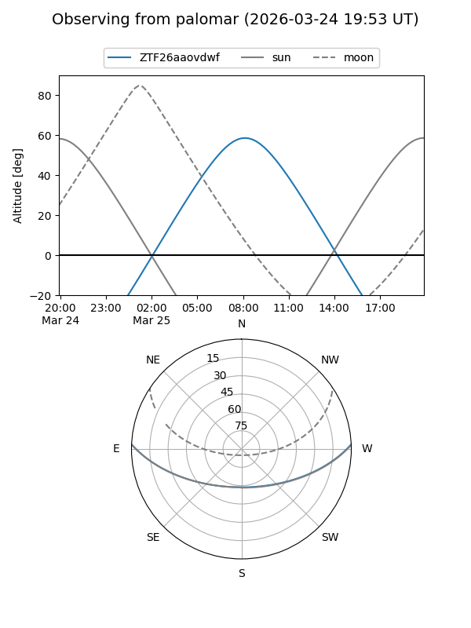

ZTF26aaovdwf
Target ZTF26aaovdwf at 2026-03-25 09:08
Aliases and brokers:
FINK: link
Lasair: link
ALeRCE: link
alt names
ZTF26aaovdwf (ztf,fink_ztf)
Coordinates:
equatorial (ra, dec) = 187.6051,+2.16902
equatorial (HMS+DMS) = 12:30:25.21,+02:10:08.46
galactic (l, b) = (290.6416,+64.53806)
Flags:
Photometry:
last ztfg=18.79, ztfr=16.08
1 ztfg, 1 ztfr detections
Lightcurve

Visibility


Additional plots